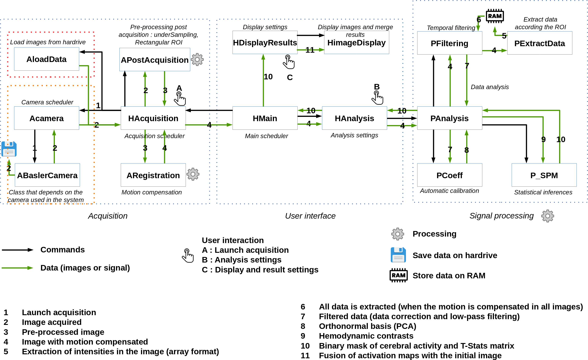

Introduction
This software allows to acquire RGB or Hyperspectral images, record theses images in an hardrive and process it in order to identify activated functional brain areas during a neurosurgical operation.
Papers related to this work are located in the directory papers.
Note that if you want to use other cameras than one used in this project you have to change th class ABaslerCamera. The best practice should be to add a new class that should refer to the new camera. Make sure to use the same names public functions, public slots and signals than the ones used in ABaslerCamera.
If no camera is detected, a video dataset (set of images or video) can be loaded. These images are then processed in a standard way.
The code developed during the Pulsalys project "NEUROIMAGERIE" is contained in the PCoeff class.
Installation on Fedora
This program is coded in C++ with the framework Qt and the compiler g++.
First Qt should be installed (>=6.10.1)
- Download the Qt online installer : https://www.qt.io/download-qt-installer?hsCtaTracking=99d9dd4f-5681-48d2-b096-470725510d34%7C074ddad0-fdef-4e53-8aa8-5e8a876d6ab4
- Install Qt with its additional libraries (custom installation) : Qt5 Compatibility mode, Qt charts, Qt multimedia, Qt Sensors, Qt serial bus, Qt serial port, Qt Shader tools
Different libraries and framework should be installed in order to use the softwares properly.
- Opencv (latest version): sudo dnf install opencv opencv-contrib opencv-doc python3-opencv python3-matplotlib python3-numpy
- Boost (latest version): sudo dnf install boost boost-devel
- fftw (latest version): sudo dnf install fftw fftw-devel
- The Pylon framework has to be installed to acquire images from a Basler camera. Please download the installation guidelines here: https://www.baslerweb.com/en/sales-support/downloads/software-downloads/pylon-5-1-0-linux-x86-64-bit-debian/
The file has a .deb extension and need to be converted into .rpm to be installed under fedora:
- First install alien: sudo dnf intall alien
- Convert the deb file into rpm: alien -r pylon*.deb
- Install the rpm file: sudo rpm -i pylon*.rpm
Depending on the version of Pylon, symbolic links need to be created:
- cd /opt/pylon5/lib64
- sudo ln -s libGCBase_gcc_v3_1_Basler_pylon_v5_1.so libGCBase.so
- sudo ln -s libGenApi_gcc_v3_1_Basler_pylon_v5_1.so libGenApi.so
Deployment on Fedora
Deployment scripts are located in the folder script.
- To deploy the soft on Fedora, please download the last release of the appimage of linuxdeploy-x86_64.AppImage (https://github.com/linuxdeploy/linuxdeploy/releases/tag/1-alpha-20251107-1) and linuxdeploy-plugin-qt-x86_64.AppImage (https://github.com/linuxdeploy/linuxdeploy-plugin-qt/releases/tag/1-alpha-20250213-1)
- Place it in the following directory: ~/Soft/ and make it executable (chmod +x linuxdeploy*)
- In .bashrc file add the line: PATH: export PATH="~/Soft:$PATH"
- [If necessary] In the script script/linux_deploy_app.sh, adapt the path of the current Qt version
- Run the script linux_deploy.sh to create an appimage of the soft: ./linux_deploy.sh ~/Soft It will create the an appImage of the soft (standalone) that could be use on other computers having the same fedora distribs.
Installation on Windows
This program is coded in C++ with the framework Qt and the compiler g++.
First Qt should be installed (>=6.10.1)
- Download the Qt online installer for windows: https://d13lb3tujbc8s0.cloudfront.net/onlineinstallers/qt-online-installer-windows-x64-4.10.0.exe
- !!!! Qt has to be installed with the Visual Studio 2022 compiler (msvc22) !!!
- Install Qt with its additional libraries (custom installation) : Qt5 Compatibility mode, Qt charts, Qt multimedia, Qt Sensors, Qt serial bus, Qt serial port, Qt Shader tools
Different libraries and framework should be installed in order to use the software properly, library have to be manually compiled with msvc22. Please refer to this document.
Deployment on Windows
To deploy the software for Windows users, use the virtual machine (foptics_windows_img with boxes). Deployment scripts are located in the folder script.
Execute the bat script windows_create_venv.bat. [If necessary] In the script, adapt the path of the current Qt version.
Software architecture
The software architecture is roughly represented by the next figure (to simplify the reading, not all classes are represented in this schematic). The following steps describe how the software works :
- 1) The software automatically tries to connect an available Basler camera. If a camera is connected the graphical interface contained in HCameraPamars is displayed, otherwise, a video dataset (set of images or video) can be loaded and the graphical interface contained in HLoadDatas is displayed.
- 1) The user uses the graphical interface to launch data acquisition or to load dataset.
- 2) Acquired or loaded images are sent to the class APostAcquisition to compute pre processing (image cropping and undersampling).
- 3) Pre processed images are sent to the class ARegistration to compensate the motionin the images using the algorithm developped by Michaël Sdika https://doi.org/10.1016/j.media.2018.12.005
- 4) Images with motion compensated are sent to the class PExtractData for data extraction. The images are formatted in a single table according to the region of interest defined by the user (or automatically calculated, see PAutomatic_ROI_Detection).
- 5) Formated images are stored into the computer RAM.
- 6) When all images have been stored into the computer RAM, temporal filtering is computed (low-pass fitering, data correction, cardiac filtering)
- 7) Data filtered with the cardiac filter are sent to the PCoeff class. In this class, the automatic calibration procedure is executed in order to get a matrix of coefficient to automatically quantify hemodynamics in tissue.
- 8) The autocalibration matrix is sent to the PAnalysis class for quantifying hemodynamics in tissue using low-pass filtered data (filtered in PFiltering).
- 9) The hemodynamic contrasts are obtained by projecting the absorbance changes measured at the surface of the tissue on the orthonormal basis calculated in step 7).
- 10) The P_SPM class is used to calculate statistic inferences. It allows to obtain t-stats matrix and a binary mask that indicates the extent of the activated functional brain areas.
- 11) The activation masks are merged with the initial image in HdisplayResult class. Then the class HImageDisplay is used to display results.

User guide
Generated by